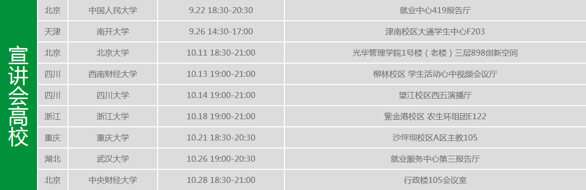
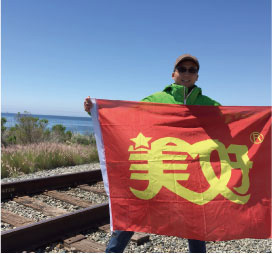
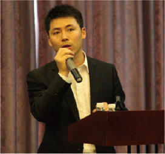
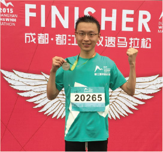
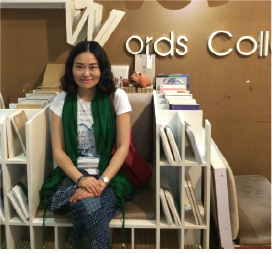
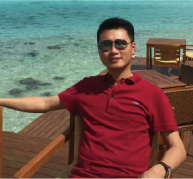
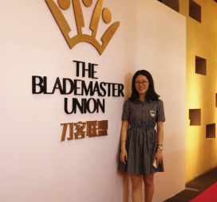
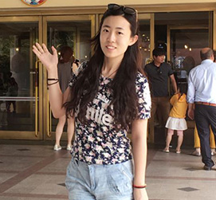

- 2017年校园招聘计划
- 管理培训生计划
- 2017年业务单元招聘
- 实习生招聘
管理培训生计划
新希望集团管理培训生项目是为集团寻找和培养“未来商业领袖”， 加入我们，你将更有可能快速成为各个领域内的领军人物。 在这里，你将获得充分信任和授权，既可以在现有产业中做强做大，又可以在新兴机会中开疆拓土，用你的冒险精神挑战各种不可能，和卓越的团队一起征战全球。
我们为你提供:
有氛围十年的培养积累了近百位MT，成长过程中有众多的先行者和同路人，与这些优秀的伙伴在一起，你将变得更卓越；
有规划：公司对MT有清晰的培养定位，提供多元化的培养方式：如高管导师一对一辅导、参与海内外重大项目、参加集团重要会议、多岗位锻炼等，公司会定期对个人发展做出评估和反馈；
有关注：公司通过定期组织MT分享交流、高管座谈、HR沟通等形式，倾听MT成长心声，解决发展问题，关注MT成长，提供充分指导和帮助；
有未来：优先享有发展资源，加速个人成长；优先承担新的工作任务，加速脱颖而出。
管理培训生
毕业于国内综合排名前50或国内专业排名前10高校，硕士及其以上学历；
专业背景：金融、经济、投资、财会、法务、人力等专业，数学、统计、自然科学等其他理工科，以及农牧、食品、工程等产业相关专业。
具有良好的中英文表达能力。
我们希望你:
1. 认同新希望集团阳光、正向、规范、创新的企业文化与价值观；
2. 乐于学习，在工作中学习，在学习中自省，在自省中持续改进和提升自我；
3. 积极上进，具有强大的内驱力、富有创新意识并能引导变革，主动承担更多职责；
4. 善于沟通，能够合理表达个人观点、有效与他人沟通，清晰传递多方观点；
5. 思维清晰，做事有条理性和逻辑性，能够在复杂环境中找出问题关键并达成结果；
6. 担任过核心学生干部者、参加全国或国际竞赛获奖者、有创业经历者或其它在校期间有过特殊成就者优先；
国际管理培训生
毕业于全球综合排名前200或全球专业排名前30高校，硕士以上学历；
专业背景：金融、经济、投资、财会、法务、人力等专业，数学、统计、自然科学等其他理工科，以及农牧、食品、工程等产业相关专业。
至少有过一年以上的海外留学或交换经历、英文流利、具有国际化视野。

宣讲安排
招聘流程
常见问题
1. 除了网申以外，还有其他投递简历的方法吗？
新希望集团今年会在多地举办校园宣讲会及双选会，大家可以现场投递简历，但建议通过网申渠道投递，宣讲会后会尽快安排AC测评，敬请关注官网状态。
2. 我在哪里可以看到宣讲会信息？
您可以通过新希望集团官网进行查看；
您可以关注新希望集团官方微信账号【新希望集团】查看宣讲会信息。
3. 如何得知自己的简历状态？
每一位进入下一阶段的同学都会接收到短信通知，大家可以登录网申系统查看网申状态。
项目背景
历经34年的快速发展，新希望对人才、尤其是年轻人的培养和发展非常重视。早在
2006年，刘永好董事长亲自提出了管理培训生计划，旨在发现和培养一批具有“未来
商业领袖”潜质的应届毕业生，项目由集团高管推行10年来，培养出了一批优秀的职
业经理人。
目前，随着新希望在全球国际业务的不断增长，集团渴望具有国际化视野和能够推进
集团业务全球化的优秀毕业生加入我们!
培养和发展
总部锻炼根据不同专业领域和所在不同事业单元，将会在不同层级的总部工作学习，以全面了解新希望海内外产业格局，适应新希望文化时间：半年至一年
基层锻炼经个人申请和考核通过后，根据具体所在产业情况，可派送至海内外各地基层业务单元学习和锻炼时间：半年至一年
带领团队根据公司发展需要和个人意愿情况，可选择回国和继续留在国外工作；结合前两阶段工作成果，
可参与重大项目的研究中，并且有机会带领小组团队承接项目。时间：半年至一年
历届管培生寄语
-

王宏亮，2007届MT，四川大学
新希望六和食品控股有限公司 投资发展部总经理
寄语： MT计划是集团人才梯队建设的重要手段，承载着我们个人与集团组织共同成长的使命。作为集团MT的一员，秉承坚持与创新的原则，贡献自己的智慧、力量与勇气。我们共同参与打造一个世界级农牧食品企业的梦想，并为这一事业目标持续奋斗。A~Za A~Za Fighting！
-

王宏亮，2007届MT，四川大学
新希望六和食品控股有限公司 投资发展部总经理
寄语： 在阳光下充满激情，在坚持中满怀自信，在海量信息里保持敏感，在思考和实践中“顶天立地”，最后，在不忘初心的路上有一颗善良平和的心。
-

王宏亮，2007届MT，四川大学
新希望六和食品控股有限公司 投资发展部总经理
寄语： 深信新希望的基业能长青，我把新希望这份工作当做我的事业，并让我的青春在这青春的事业中闪光，将养猪进行到底！
-

王宏亮，2007届MT，四川大学
新希望六和食品控股有限公司 投资发展部总经理
寄语： 保护好你的热情，和那颗年轻纯真的心，成长的道路上，不要给自己设限，珍惜每一个舞台和机会
-

王宏亮，2007届MT，四川大学
新希望六和食品控股有限公司 投资发展部总经理
寄语： 认真是一种态度，更是一种品格；专注是一种坚持，更是一种信仰，如果必须要再加一条，那一定是发自内心的拥抱变化，在工作中用心体会他们，你一定会有收获！
-
王宏亮，2007届MT，四川大学
新希望六和食品控股有限公司 投资发展部总经理
寄语： 读万卷书，不如行万里路；行万里路，不如阅人无数；阅人无数，不如吃苦无数；吃苦无数，不如高人指路；高人指路，不如贵人相助；贵人相助，不如自己领悟；自己领悟，不如加入新希望MT俱乐部！
-
王宏亮，2007届MT，四川大学
新希望六和食品控股有限公司 投资发展部总经理
寄语： 用积极的行动去验证乐观的假设。
-

王宏亮，2007届MT，四川大学
新希望六和食品控股有限公司 投资发展部总经理
寄语： 相比位置，更重要的是方向。要将学习内化为日常，要感恩每一次成长，要持续燃烧小宇宙，要守护内心小小的梦想，要脚踏实地，要真诚恻怛，要能浮能沉，要感想敢做敢担当。
-
王宏亮，2007届MT，四川大学
新希望六和食品控股有限公司 投资发展部总经理
寄语： 步入社会后的生活没有容易二字，但这里离梦想更近，让我们用超预期的工作成果，来实现超预期的梦想吧！
-

王宏亮，2007届MT，四川大学
新希望六和食品控股有限公司 投资发展部总经理
寄语： 脚踏实地，步步为赢，新希望管培生，你值得拥有。
-
2017级MT你自己
成为最喜欢的自己，我在新希望等你
“希望之星”实习生计划
为打强新希望未来人才储备，特在2016年开展新希望集团未来人才培养计划——“希望之星”。第一期计划邀请海内外顶尖院校毕业的20名优秀非毕业生通过参加项目或课题的方法进行实习，实习期结束后根据考核结果，可获得毕业年份新希望MT招聘直通终面的机会。
实习岗位金融财务投资法务品牌 等岗位实习生
实习时间每年暑假期间，至少连续实习三个月，每周保证5天
培养方案第一周熟悉集团总部情况，研读部门完成过的项目，熟悉部门工作
第二周开始由高级经理带领，进入项目工作;
每个月人力资源同事将会与部门领导一同考核实习业绩,并提出职业发展规划建议;
实习结束后考评结果为优，则可直接获得毕业年份新希望集团MT终面机会。
应聘要求
- 符合新希望集团人才观，认同企业文化，认同人才培养机制；
- 符合新希望集团人才观，认同企业文化，认同人才培养机制；
- 符合新希望集团人才观，认同企业文化，认同人才培养机制；
- 符合新希望集团人才观，认同企业文化，认同人才培养机制；
申请方式：以“学校+姓名+希望之星”命名简历并转化为PDF格式，
发送至mt@newhope.cn